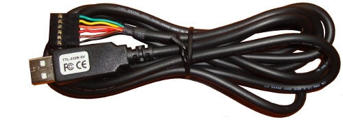
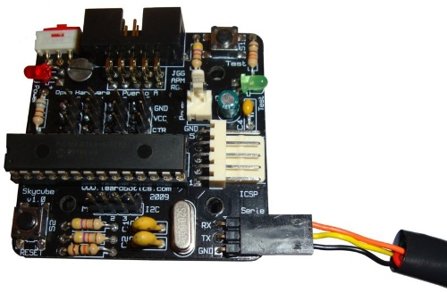
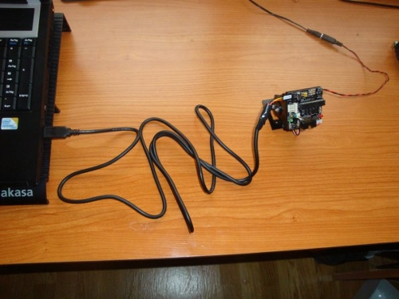

Para conectar la Skycube 1.0 al PC utilizamos el cable USB-serie de FTDI, modelo TTL-232R-5V. Es un cable que incorpora un conversor usb-serie. Por un extremo se enchufa al USB del PC y mediante un conector de 3 pines (similar al de los servos futaba) se conecta a la Skycube.

Mediante este cable se descarga el firmware en la Skycube muy rápidamente, usando el pydownloader, de manera similar a como se hace con la Skypic. Además, el cable sirve para conectarse vía serie con la Skycube y poder así tele-controlar los robots modulares desde el PC. Y por supuesto, estos robots se pueden mover también de manera autónoma, sin cables 😉
Para usar el cable es necesario cambiar el conector de 6 pines por uno de 3. En este enlace está publicada la documentación sobre cómo modificar el cable. Esta modificación es reversible, por lo que en cualquier momento se puede volver a tener el cable original.

En esta foto se ha conectado un módulo y1 al portátil, para descargar software. El otro cable es el de alimentación.
Hola ke tal keria saber si se puede fabricas un cable ftdi TTL-232R???
Sí, usa el chip FT232RL de FTDI. Te hace la conversión USB-serie